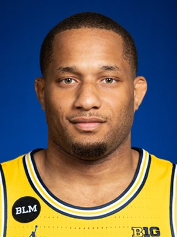
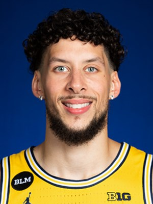
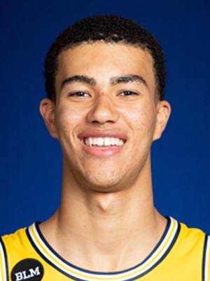
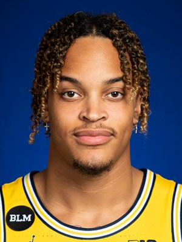
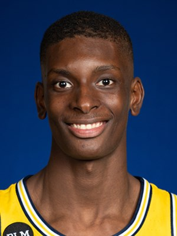
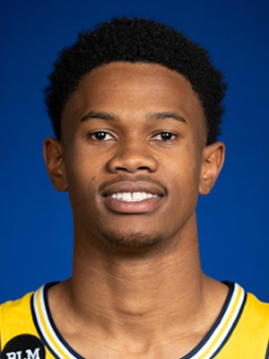

Eli Brooks Graduate Student Guard, 6 foot 1 inch, 185 pounds • Nicknamed "The Professor" by U-M head coach Juwan Howard • Quick and aggressive guard who is a skilled shooter, especially from long range • Strong basketball IQ and feel for the game, who is rarely in the wrong place on the floor • Referred to as the fourth assistant coach with his knowledge of game
Devante Jones Graduate Student Guard, 6 foot 1 inch, 200 pounds • Scoring guard and with ability to get to downhill • Uses ball screens to his benefit, or to set up a teammate • Strong, efficient and has good court awareness • Utilizes the floater when getting to basket
Brandon Johns Jr Senior Forward, 6 foot 8 inches, 240 pounds • Extremely athletic player, who can score in many ways • Continues to grow with his game in all areas • Ability to knock down mid- and long-range baskets • Good defensive motor, working to improve consistency in rebounding physicality • Scrappy player and hustles down low
Caleb Houstan Freshman Forward/Guard, 6 foot 8 inches, 205 pounds • Good length with a tremendous shooting range with reliable handles and rebounding skills • High basketball IQ; student of the game • Highest rated recruit committed to Michigan since Glenn Robinson III (No. 18, 2012) • As a youth attended Michigan Basketball Summer Camps
Terrance Williams II Sophomore Forward, 6 foot 7 inches, 230 pounds • Versatile “hybrid” forward who can play inside and out • Reliable rebounder who is known for consistent defensive efforts • Efficient shooter with post moves as well as the ability to shoot from outside • Physically tough and not afraid of contact; has a Big Ten frame
Moussa Diabate Freshman Forward, 6 foot 11 inches, 210 pounds • Known for his high energy and aggressiveness on the court • Possesses great length and has consistently grown as a defender with a wingspan of 7-3 • Takes pride in rebounding • Developing ball-handling and outside jumper

Frankie Collins Freshman Guard, 6 foot 1 inch, 185 pounds • Known for his ball handling skills and strong abilities to make passes and plays for his teammates • Downhill attacker and beating defenders at the rim or finding open teammates • Known for his play making ability and high basketball IQ • Athletic and has a very high vertical and strong leaping abilit
Zeb Jackson Sophomore Guard, 6 foot 5 inches, 190 pounds • Deceptive and athletic guard with strong ball handling skills • High basketball IQ and overall feel for the game • Strong passer with ability to drive to the basket • Strong outside shooting ability